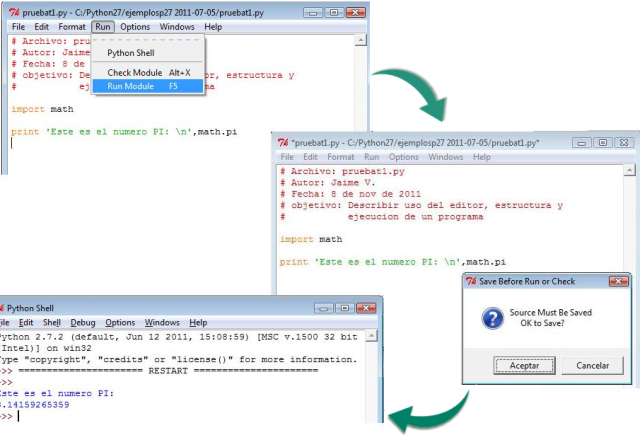
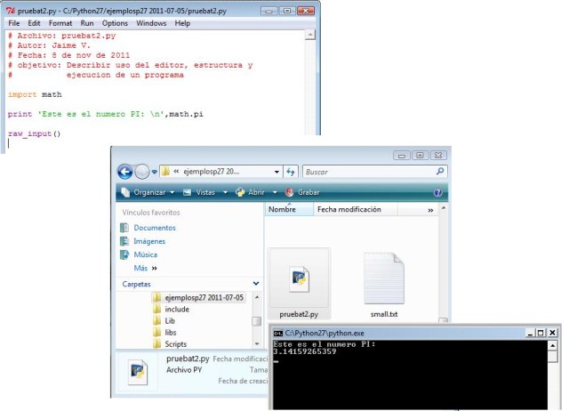
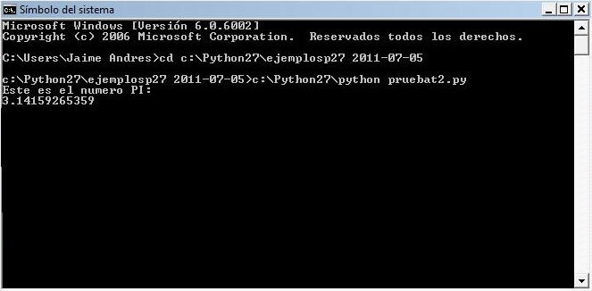

Edición, estructura y ejecución de programas en Python
- Ariel Vernaza
- Facultad de informática, electrónica y conunicación
- Universidad de Panamá
Para editar un archivo en código de lenguaje Python es posible utilizar cualquier editor de textos, pero el interface de Python dispone de un editor que facilita su escritura y lectura mostrando en colores diferentes las palabras claves.

Para iniciar un nuevo archivo en el editor desde el interface de Python, se selecciona la opción mostrada en la imagen anterior. Esto abre una nueva ventana identificada en la parte superior como Untitled debido a que aún no se ha dado ningún nombre al nuevo archivo. A partir de este momento se puede escribir líneas de código en Python y usar la opción Run del menú para ejecutar el programa escrito. El editor está inicialmente configurado para guardar el nuevo archivo o sus cambios antes de realizar la ejecución del programa.
El lenguaje Python no exige una estructura rígida en los códigos, pero se debe tener presente que los módulos y funciones deben ser programados o cargados antes de ser invocados en el código. La sintaxis se debe tener muy presente y poner especial atención en los espacios o INDENTACION, ya que Python identifica los finales de bloques con estos espacios.

La imagen anterior muestra una secuencia de creación y ejecución de un archivo desde el editor. El archivo pruebat1.py se creó escribiendo un encabezamiento y luego se importó el módulo math para mostrar en pantalla la constante PI. Al llamar en el menú Run la opción de Run Module F5 aparece el cuadro de dialogo para guardar el archivo y luego de aceptar aparece el resultado de la ejecución en la otra ventana del interface de Python (Python Shell). Si no se han hecho cambios al archivo, la ventana de dialogo para guardar los cambios no aparecerá. La estructura recomendada es escribir un encabezamiento para explicar el código, luego importar los módulos necesarios y después las líneas de código del proceso.
Una opción alternativa para ejecutar o correr un archivo .py es hacer doble clic desde el explorador del Windows y el sistema hace un llamado del ejecutable python.exe y lo enlaza con el código para realizar la acción que presenta los resultados en una ventana del sistema. La próxima imagen muestra esta secuencia y el nuevo archivo al cual se le adiciona la instrucción nueva raw_input() para hacer una pausa en la ventana hasta que el usuario accione la tecla enter para cerrar la ventana. Sin esta última instrucción la ventana se abre por un instante y se cierra sin tener la oportunidad de observar los resultados.

Lo mismo se puede realizar directamente desde una ventana del sistema operativo escribiendo directamente las instrucciones de ejecución como lo muestra la siguiente imagen:

Los archivos del lenguaje Python se escriben por convención con la extensión .py ; así el editor del interface los presenta con los diferentes colores para la identificación de palabras claves y funciones. Si por error o por gusto se usa otra terminación, el editor no mostrará el texto del archivo como se muestra en las imágenes de Secuencia de edición, ejecución y respuesta así como en la Ejecución desde Windows.
Estos archivos de Python no requieren ninguna compilación para su ejecución desde el código fuente en texto, sólo tener en la máquina el python.exe para realizar la interpretación o si desea puede generar ejecutables usando el modulo py2exe como lo describen las referencias (Logix4u, 2011; effbot.org, 2011).